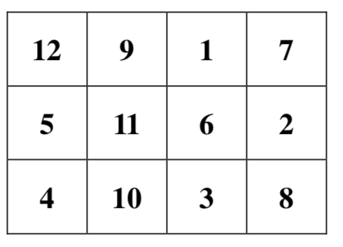
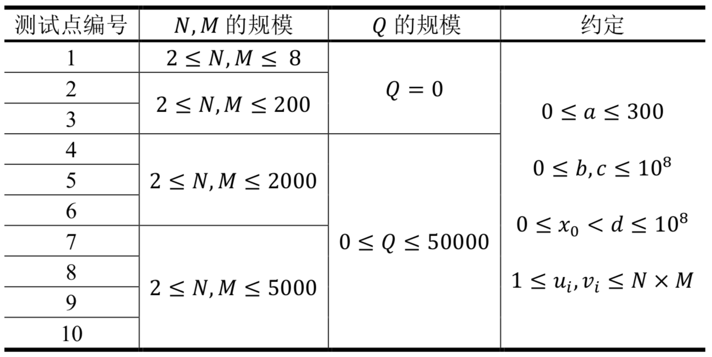

Comet OJ
Comet OJ第1行包含5个整数，依次为$𝑥_0, 𝑎, 𝑏, 𝑐, 𝑑$，描述小H采用的随机数生成算法所需的随机种子。
第2行包含三个整数𝑁, 𝑀, 𝑄，表示小H希望生成一个1到𝑁 × 𝑀的排列来填入她𝑁行𝑀列的棋盘，并且小H在初始的𝑁 × 𝑀次交换操作后，又进行了𝑄次额外的交换操作。
接下来𝑄行，第$𝑖$行包含两个整数$𝑢_𝑖, 𝑣_𝑖$，表示第𝑖次额外交换操作将交换$𝑇_{𝑢_𝑖}$和$𝑇_{𝑣_𝑖}$的值。
小H最近在研究随机算法。随机算法往往需要通过调用随机数生成函数（例如Pascal中的random和C/C++中的rand）来获得随机性。事实上，随机数生成函数也并不是真正的“随机”，其一般都是利用某个算法计算得来的。
比如，下面这个二次多项式递推算法就是一个常用算法：
算法选定非负整数$𝑥_0, 𝑎, 𝑏, 𝑐, 𝑑$作为随机种子，并采用如下递推公式进行计算。
对于任意$𝑖≥1, 𝑥_i =(𝑎 \cdot 𝑥_{i-1}^2+𝑏\cdot 𝑥_{i-1} +𝑐)\bmod𝑑$
这样可以得到一个任意长度的非负整数数列$\{𝑥_𝑖\}_{𝑖≥1}$，一般来说，我们认为这个数列是随机的。
利用随机序列$\{𝑥_𝑖\}_{𝑖≥1}$，我们还可以采用如下算法来产生一个1到K的随机排列$\{𝑇_i\}^𝐾_{i=1}$：
此外，小H在这𝐾次交换的基础上，又额外进行了𝑄次交换操作，对于第$𝑖$次额外交换，小H会选定两个下标$𝑢_𝑖$和$𝑣_𝑖$，并交换$𝑇_{𝑢_𝑖}$和$𝑇_{𝑣_𝑖}$的值。
为了检验这个随机排列生成算法的实用性，小H设计了如下问题：小H有一个𝑁行𝑀列的棋盘，她首先按照上述过程，通过𝑁 × 𝑀 + 𝑄次交换操作，生成了一个1~𝑁 × 𝑀的随机排列$\{𝑇_i\}^{𝑁×𝑀}_{i=1}$，然后将这𝑁 × 𝑀个数逐行逐列依次填入这个棋盘：也就是第$𝑖$行第$𝑗$列的格子上所填入的数应为$𝑇_{(𝑖−1)\cdot 𝑀+𝑗}$。
接着小H希望从棋盘的左上角，也就是第一行第一列的格子出发，每次向右走或者向下走，在不走出棋盘的前提下，走到棋盘的右下角，也就是第𝑁行第𝑀列的格子。
小H把所经过格子上的数字都记录了下来，并从小到大排序，这样，对于任何一条合法的移动路径，小H都可以得到一个长度为𝑁 + 𝑀 − 1的升序序列，我们称之为路径序列。
小H想知道，她可能得到的字典序最小的路径序列应该是怎样的呢?
第1行包含5个整数，依次为$𝑥_0, 𝑎, 𝑏, 𝑐, 𝑑$，描述小H采用的随机数生成算法所需的随机种子。
第2行包含三个整数𝑁, 𝑀, 𝑄，表示小H希望生成一个1到𝑁 × 𝑀的排列来填入她𝑁行𝑀列的棋盘，并且小H在初始的𝑁 × 𝑀次交换操作后，又进行了𝑄次额外的交换操作。
接下来𝑄行，第$𝑖$行包含两个整数$𝑢_𝑖, 𝑣_𝑖$，表示第𝑖次额外交换操作将交换$𝑇_{𝑢_𝑖}$和$𝑇_{𝑣_𝑖}$的值。
输出一行，包含𝑁 + 𝑀 − 1个由空格隔开的正整数，表示可以得到的字典序最小的路径序列。
1 3 5 1 71
3 4 3
1 7
9 9
4 91 2 6 8 9 12654321 209 111 23 70000001
10 10 01 3 7 10 14 15 16 21 23 30 44 52 55 70 72 88 94 95 97123456 137 701 101 10000007
20 20 01 10 12 14 16 26 32 38 44 46 61 81 84 101 126 128 135 140 152 156 201 206 237 242 243 253 259 269 278 279 291 298 338 345 347 352 354 383 395【样例说明】
对于样例1，根据输入的随机种子，小H所得到的前12个随机数$𝑥_𝑖$为：
9 5 30 11 64 42 36 22 1 9 5 30
根据这12个随机数，小H在进行初始的12次交换操作后得到的排列为：
6 9 1 4 5 11 12 2 7 10 3 8
在进行额外的3次交换操作之后，小H得到的最终的随机排列为：
12 9 1 7 5 11 6 2 4 10 3 8
这个随机排列可以得到如下方的棋盘：
最优路径依次经过的数字为：$12 \to9 \to1 \to6 \to2 \to8$。

对于样例3，由于卷面宽度不够，在样例输出中出现了换行。请注意，这里的换行仅作展示用途，事实上，样例输出有且仅有一行，所有的数字都应该出现在同一行中。
【数据规模与约定】
所有测试数据的范围和特点如下表所示

【特别提示】
本题的空间限制是256 MB，请务必保证提交的代码运行时所使用的总内存空间不超过此限制。
一个32位整数（例如C/C++中的int和Pascal中的Longint）为4字节，因而如果在程序中声明一个长度为1024 × 1024的32位整型变量的数组，将会占用4 MB的内存空间。